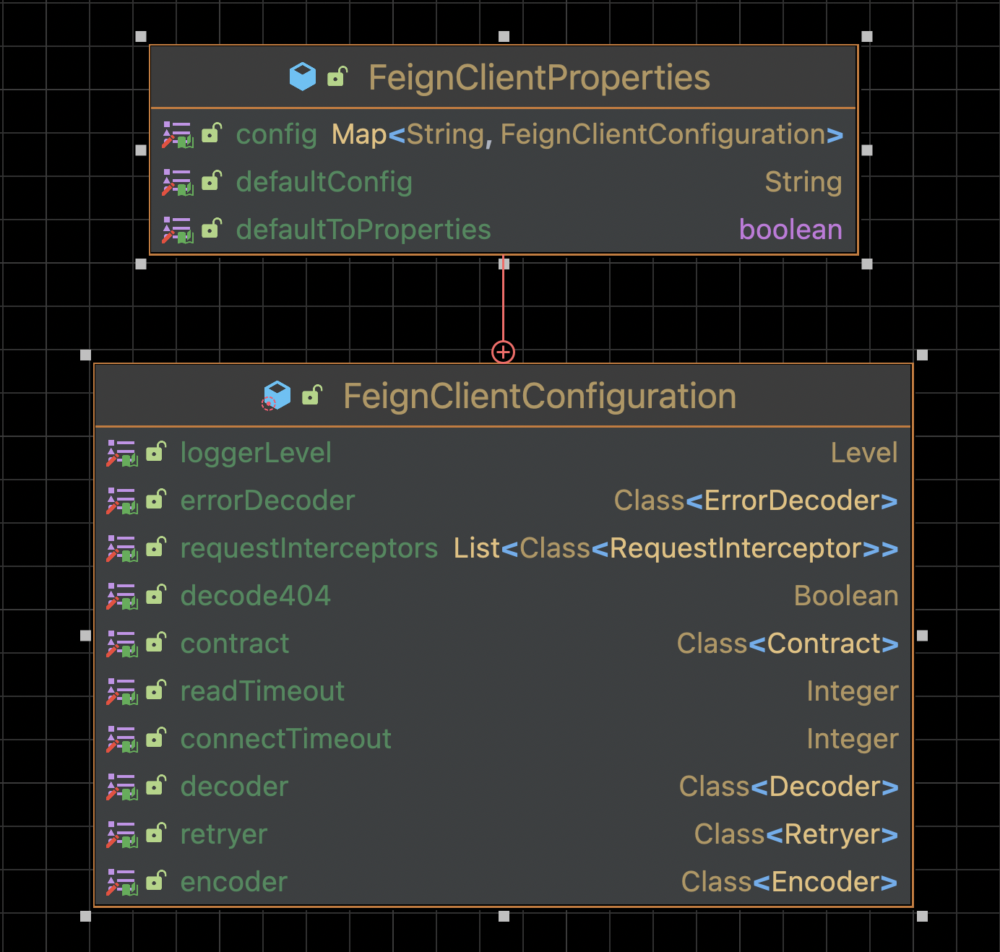
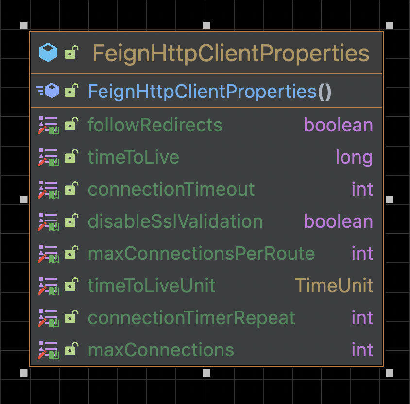

Spring 整合 Feign 原理
基本流程：
-
使用
FeignClientsRegistrar扫包并-
注入
FeignClient配置信息(实际是注入FeignClientFactoryBean) -
注入
FeignClient(实际是注入FeignClientFactoryBean)
-
-
使用
FeignClientFactoryBean和FeignClientFactoryBean为每个@FeignClient标记的类创建子容器，每个容器相互隔离，都拥有完整的FeignClient配置信息
核心类：
| FeignClientFactoryBean | FeignContext |
|---|---|

|

|
入口
org.springframework.cloud.openfeign.EnableFeignClients@Retention(RetentionPolicy.RUNTIME)
@Target(ElementType.TYPE)
@Documented
@Import(FeignClientsRegistrar.class) (1)
public @interface EnableFeignClients {
// ...
}| 1 | 导入 FeignClient 注入器 |
FeignClient 注入器
org.springframework.cloud.openfeign.FeignClientsRegistrar
@Override
public void registerBeanDefinitions(AnnotationMetadata metadata, BeanDefinitionRegistry registry) {
registerDefaultConfiguration(metadata, registry); (1)
registerFeignClients(metadata, registry); (2)
}| 1 | 注入 @EnableFeignClients 的全局默认配置（defaultConfiguration） |
| 2 | 注入 @FeignClient |
注入 @EnableFeignClients
org.springframework.cloud.openfeign.FeignClientsRegistrar#registerDefaultConfiguration
private void registerClientConfiguration(BeanDefinitionRegistry registry, Object name,
Object configuration) {
BeanDefinitionBuilder builder = BeanDefinitionBuilder
.genericBeanDefinition(FeignClientSpecification.class);
builder.addConstructorArgValue(name);
builder.addConstructorArgValue(configuration);
// 注入 FeignClientSpecification （包含 ）EnableFeignClients.defaultConfiguration
registry.registerBeanDefinition(
name + "." + FeignClientSpecification.class.getSimpleName(),
builder.getBeanDefinition());
}注入 @FeignClient
org.springframework.cloud.openfeign.FeignClientsRegistrar#registerFeignClients
public void registerFeignClients(AnnotationMetadata metadata, BeanDefinitionRegistry registry) {
// 获取ClassPath扫描器
ClassPathScanningCandidateComponentProvider scanner = getScanner();
// 为扫描器设置资源加载器
scanner.setResourceLoader(this.resourceLoader);
Set<String> basePackages;
// 获取 @EnableFeignClients 注解的属性 map
Map<String, Object> attrs = metadata
.getAnnotationAttributes(EnableFeignClients.class.getName());
AnnotationTypeFilter annotationTypeFilter = new AnnotationTypeFilter(
FeignClient.class);
// 获取 @EnableFeignClients 注解的 clients 属性
final Class<?>[] clients = attrs == null ? null
: (Class<?>[]) attrs.get("clients");
// 如果 @EnableFeignClients 注解未指定 clients 属性则扫描添加（扫描过滤条件为：标记有 @FeignClient 的类）
if (clients == null || clients.length == 0) {
scanner.addIncludeFilter(annotationTypeFilter);
basePackages = getBasePackages(metadata);
}
// 如果 @EnableFeignClients 注解已指定 clients 属性，则直接添加，不再扫描（从这里可以看出，为了加快容器启动速度，建议都指定 clients 属性）
else {
final Set<String> clientClasses = new HashSet<>();
basePackages = new HashSet<>();
for (Class<?> clazz : clients) {
basePackages.add(ClassUtils.getPackageName(clazz));
clientClasses.add(clazz.getCanonicalName());
}
// 过滤标记有 @FeignClient 的类
AbstractClassTestingTypeFilter filter = new AbstractClassTestingTypeFilter() {
@Override
protected boolean match(ClassMetadata metadata) {
String cleaned = metadata.getClassName().replaceAll("\\$", ".");
return clientClasses.contains(cleaned);
}
};
scanner.addIncludeFilter(
new AllTypeFilter(Arrays.asList(filter, annotationTypeFilter)));
}
// 遍历最终获取到的 @FeignClient 注解类的集合
for (String basePackage : basePackages) {
Set<BeanDefinition> candidateComponents = scanner
.findCandidateComponents(basePackage);
for (BeanDefinition candidateComponent : candidateComponents) {
if (candidateComponent instanceof AnnotatedBeanDefinition) {
// 验证带注释的类必须是接口，不是接口则直接抛出异常
// verify annotated class is an interface
AnnotatedBeanDefinition beanDefinition = (AnnotatedBeanDefinition) candidateComponent;
AnnotationMetadata annotationMetadata = beanDefinition.getMetadata();
Assert.isTrue(annotationMetadata.isInterface(),
"@FeignClient can only be specified on an interface");
// 获取 @FeignClient 注解的属性值
Map<String, Object> attributes = annotationMetadata
.getAnnotationAttributes(
FeignClient.class.getCanonicalName());
// 获取 clientName 的值，也就是在构造器的参数值
String name = getClientName(attributes);
// 同上一个方法最后调用的方法，注入 @FeignClient中的configuration对象到容器中，name：name.feignClientSpecification
registerClientConfiguration(registry, name, attributes.get("configuration"));
// 循环注入 @FeignClient 对象，name：className
registerFeignClient(registry, annotationMetadata, attributes);
}
}
}
}org.springframework.cloud.openfeign.FeignClientsRegistrar#registerFeignClient
private void registerFeignClient(BeanDefinitionRegistry registry, AnnotationMetadata annotationMetadata, Map<String, Object> attributes) { // 获取类名称
String className = annotationMetadata.getClassName();
// BeanDefinitionBuilder的主要作用就是构建一个AbstractBeanDefinition,AbstractBeanDefinition类最终被构建成一个BeanDefinitionHolder然后注册到Spring中
// 注意：beanDefinition类为FeignClientFactoryBean，故在Spring获取类的时候实际返回的是FeignClientFactoryBean类
BeanDefinitionBuilder definition = BeanDefinitionBuilder
.genericBeanDefinition(FeignClientFactoryBean.class);
validate(attributes);
// 添加FeignClientFactoryBean的属性，
definition.addPropertyValue("url", getUrl(attributes));
definition.addPropertyValue("path", getPath(attributes));
String name = getName(attributes);
definition.addPropertyValue("name", name);
// Feign 容器名称
String contextId = getContextId(attributes);
definition.addPropertyValue("contextId", contextId);
definition.addPropertyValue("type", className);
definition.addPropertyValue("decode404", attributes.get("decode404"));
definition.addPropertyValue("fallback", attributes.get("fallback"));
definition.addPropertyValue("fallbackFactory", attributes.get("fallbackFactory"));
definition.setAutowireMode(AbstractBeanDefinition.AUTOWIRE_BY_TYPE);
// 设置别名
String alias = contextId + "FeignClient";
AbstractBeanDefinition beanDefinition = definition.getBeanDefinition();
boolean primary = (Boolean) attributes.get("primary"); // has a default, won't be
// null
beanDefinition.setPrimary(primary);
String qualifier = getQualifier(attributes);
if (StringUtils.hasText(qualifier)) {
alias = qualifier;
}
// 定义BeanDefinitionHolder，name是 Feign标记的className
BeanDefinitionHolder holder = new BeanDefinitionHolder(beanDefinition, className,
new String[] { alias });
// 注入FeignClientFactoryBean
BeanDefinitionReaderUtils.registerBeanDefinition(holder, registry);
}FeignClientFactoryBean
注册 FeignClientFactoryBean 时，会把 getObject() 方法返回的对象注入到 Spring 容器中
org.springframework.cloud.openfeign.FeignClientFactoryBean#getObject
@Override
public Object getObject() throws Exception {
// 返回jdk动态代理，最终注入 Spring 容器的是每个 @FeignClient 标记接口的代理类
return getTarget();
}getTarget()
org.springframework.cloud.openfeign.FeignClientFactoryBean#getTarget
<T> T getTarget() {
// FeignContext 容器，所有配置信息都丛这里取
// 从 FeignAutoConfiguration 注入
FeignContext context = this.applicationContext.getBean(FeignContext.class); (1)
Feign.Builder builder = feign(context);
// 未指定 url 属性
if (!StringUtils.hasText(this.url)) {
if (!this.name.startsWith("http")) {
this.url = "http://" + this.name;
}
else {
this.url = this.name;
}
// 格式化 url
this.url += cleanPath();
// HystrixTargeter.target
// url 是 name (服务名)，根据服务名去负载均衡
return (T) loadBalance(builder, context,
new HardCodedTarget<>(this.type, this.name, this.url)); (2)
}
// 指定 url 属性（url协议头不是必须的)
if (StringUtils.hasText(this.url) && !this.url.startsWith("http")) {
this.url = "http://" + this.url;
}
// 格式化 url
String url = this.url + cleanPath();
// 获取 http client
Client client = getOptional(context, Client.class); (4) (5)
if (client != null) {
if (client instanceof LoadBalancerFeignClient) {
// not load balancing because we have a url,
// but ribbon is on the classpath, so unwrap
client = ((LoadBalancerFeignClient) client).getDelegate();
}
if (client instanceof FeignBlockingLoadBalancerClient) {
// not load balancing because we have a url,
// but Spring Cloud LoadBalancer is on the classpath, so unwrap
client = ((FeignBlockingLoadBalancerClient) client).getDelegate();
}
builder.client(client);
}
Targeter targeter = get(context, Targeter.class); (4)
// DefaultTargeter.target()
// url 是 @FeignClient 中指定的 URL
return (T) targeter.target(this, builder, context,
new HardCodedTarget<>(this.type, this.name, url)); (3)
}| 1 | 注入 FeignContext，入口在 FeignAutoConfiguration |
| 2 | 如果配置了 Hystrix，执行此方法
|
| 3 | 默认执行的方法 |
| 4 | get() 和 getOptional() 都是从 Feign 容器中去获取需要的类。其中通过 get() 方法获取的类不能为空。
|
| 5 | Feign 默认的 http client 是 java.net.HttpURLConnection。 |
Targeter.target()
Targeter 接口有两个实现 DefaultTargeter 和 HystrixTargeter，根据是否配置熔断分开处理，最终都是执行 Feign.Builder 的 target方法。
org.springframework.cloud.openfeign.DefaultTargeter
class DefaultTargeter implements Targeter {
@Override
public <T> T target(FeignClientFactoryBean factory, Feign.Builder feign,
FeignContext context, Target.HardCodedTarget<T> target) {
// 最终执行 Feign.Builder 的 target方法
return feign.target(target);
}
}org.springframework.cloud.openfeign.HystrixTargeter#target
class HystrixTargeter implements Targeter {
@Override
public <T> T target(FeignClientFactoryBean factory, Feign.Builder feign,
FeignContext context, Target.HardCodedTarget<T> target) {
if (!(feign instanceof feign.hystrix.HystrixFeign.Builder)) {
return feign.target(target);
}
feign.hystrix.HystrixFeign.Builder builder = (feign.hystrix.HystrixFeign.Builder) feign;
String name = StringUtils.isEmpty(factory.getContextId()) ? factory.getName()
: factory.getContextId();
SetterFactory setterFactory = getOptional(name, context, SetterFactory.class);
if (setterFactory != null) {
builder.setterFactory(setterFactory);
}
Class<?> fallback = factory.getFallback();
if (fallback != void.class) {
return targetWithFallback(name, context, target, builder, fallback);
}
Class<?> fallbackFactory = factory.getFallbackFactory();
if (fallbackFactory != void.class) {
return targetWithFallbackFactory(name, context, target, builder,
fallbackFactory);
}
// 最终执行 Feign.Builder 的 target方法
return feign.target(target);
}FeignContext
FeignContext 继承自 NamedContextFactory ，实现为每个 @FeignClient 标记的接口创建单独的子容器。
初始化
FeignContext 由 FeignAutoConfiguration 在启动时注入，FeignAutoConfiguration 被 EnableConfigurationProperties 修饰，启用对 @ConfigurationProperties 注释Bean的支持。。
org.springframework.cloud.openfeign.FeignAutoConfiguration
@Configuration(proxyBeanMethods = false)
@ConditionalOnClass(Feign.class)
@EnableConfigurationProperties({FeignClientProperties.class, FeignHttpClientProperties.class })
@Import(DefaultGzipDecoderConfiguration.class)
public class FeignAutoConfiguration {
@Autowired(required = false)
private List<FeignClientSpecification> configurations = new ArrayList<>();
@Bean
public HasFeatures feignFeature() {
return HasFeatures.namedFeature("Feign", Feign.class);
}
@Bean
public FeignContext feignContext() {
// 注入 FeignContext
FeignContext context = new FeignContext();
context.setConfigurations(this.configurations);
return context;
}
//..
}org.springframework.cloud.openfeign.FeignContext#FeignContext
public class FeignContext extends NamedContextFactory<FeignClientSpecification> {
public FeignContext() {
// FeignClientsConfiguration 是 Feign的默认全局配置
super(FeignClientsConfiguration.class, "feign", "feign.client.name");
}
}通过调用父类的 getInstance 方法返回容器中的 Bean。
org.springframework.cloud.context.named.NamedContextFactory#getInstance
public <T> T getInstance(String name, Class<T> type) {
// 先判断内存中有没有，有直接返回，没有会创建一个
// 所有子容器保存在一个 ConcurrentHashMap 中
AnnotationConfigApplicationContext context = getContext(name);
if (BeanFactoryUtils.beanNamesForTypeIncludingAncestors(context,
type).length > 0) {
return context.getBean(type);
}
return null;
}配置信息
FeignClientProperties
@ConfigurationProperties("feign.client")
public class FeignClientProperties {
private boolean defaultToProperties = true;
private String defaultConfig = "default";
private Map<String, FeignClientConfiguration> config = new HashMap<>();
//...
}

FeignHttpClientProperties
@ConfigurationProperties(prefix = "feign.httpclient")
public class FeignHttpClientProperties {
/**
* Default value for disabling SSL validation.
*/
public static final boolean DEFAULT_DISABLE_SSL_VALIDATION = false;
/**
* 默认 httpclient 最大连接数
*/
public static final int DEFAULT_MAX_CONNECTIONS = 200;
/**
* 默认每个 FeignClient 最大连接数
*/
public static final int DEFAULT_MAX_CONNECTIONS_PER_ROUTE = 50;
/**
* 默认存活时间
*/
public static final long DEFAULT_TIME_TO_LIVE = 900L;
/**
* 默认超时时间
*/
public static final int DEFAULT_CONNECTION_TIMEOUT = 2000;
/**
* 默认时间单位 s
*/
public static final TimeUnit DEFAULT_TIME_TO_LIVE_UNIT = TimeUnit.SECONDS;
//...
}
